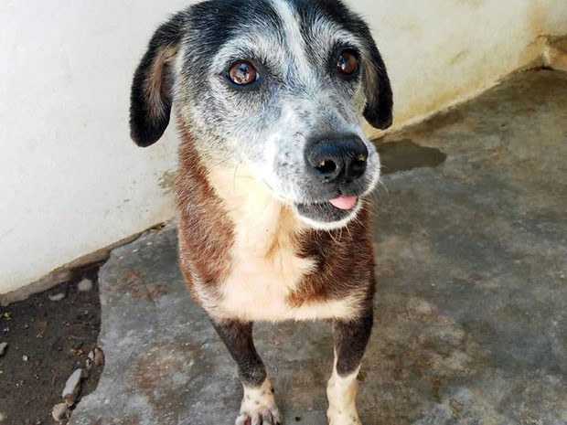
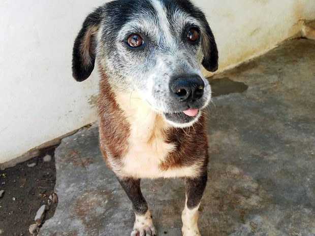

Resgate Animal
O Resgate Animal é uma plataforma dedicada a conectar ONGs com pessoas interessadas em adotar animais de rua. Nosso objetivo é facilitar o processo de adoção, garantindo que esses animais encontrem lares amorosos e responsáveis. Através da nossa plataforma, ONGs podem divulgar os animais disponíveis, compartilhar suas histórias e buscar adotantes que estejam prontos para oferecer uma nova chance a esses bichinhos. Além disso, o Resgate Animal oferece suporte às ONGs com ferramentas para gerenciar campanhas, arrecadar doações e organizar eventos de adoção. Acreditamos que todos os animais merecem uma vida digna, e nossa missão é ajudar a transformar essa realidade.

 

A adoção de animais de rua é um ato de amor que transforma tanto a vida do animal quanto a de quem adota. Ao adotar, você salva uma vida e contribui para o controle populacional de animais nas ruas, ajudando a reduzir o número de bichinhos abandonados. Além disso, você estará oferecendo a oportunidade de um novo começo para um animal que precisa de carinho e cuidado. Adotar também traz grandes benefícios ao adotante. Você ganha um companheiro fiel e amoroso, e estudos mostram que a convivência com animais pode reduzir o estresse e melhorar a qualidade de vida. Optar pela adoção, em vez da compra, é uma escolha responsável que contribui para uma causa maior: o bem-estar animal e a luta contra o abandono.
Cuidar bem dos seus cães envolve uma série de práticas essenciais para garantir a saúde e o bem-estar deles. Aqui estão alguns pontos importantes a considerar:
Esses cuidados são essenciais para garantir que seu animal de estimação tenha uma vida longa, saudável e feliz. Ao seguir práticas regulares de vermifugação, vacinação, alimentação adequada e higiene, você está prevenindo doenças e promovendo o bem-estar físico e emocional do seu cão. Além disso, ao oferecer exercícios e estímulos mentais diários, você contribui para o desenvolvimento de uma rotina equilibrada, proporcionando uma qualidade de vida superior e fortalecendo o vínculo entre vocês.
Se você tiver dúvidas ou quiser mais informações, preencha o formulário abaixo e entraremos em contato o mais rápido possível.